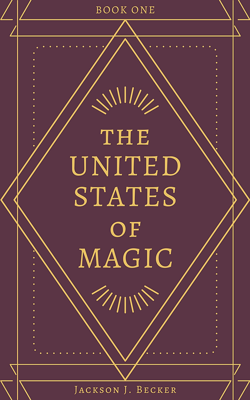
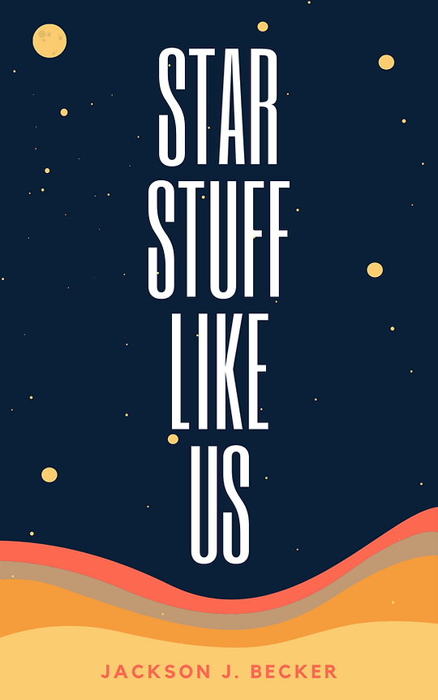
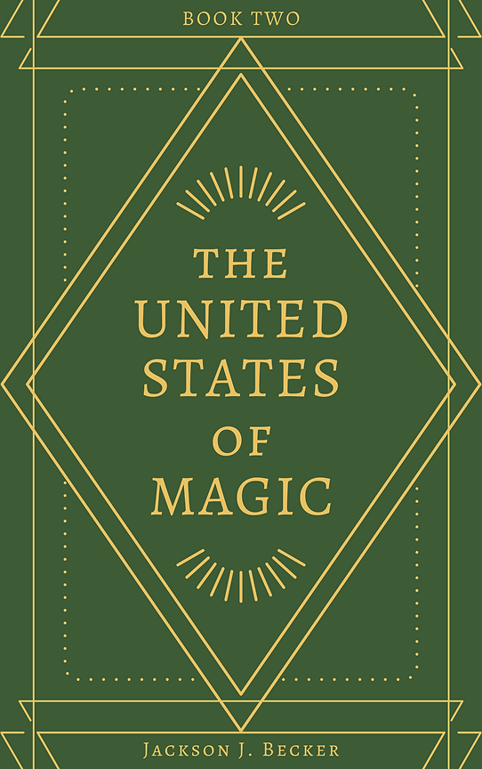
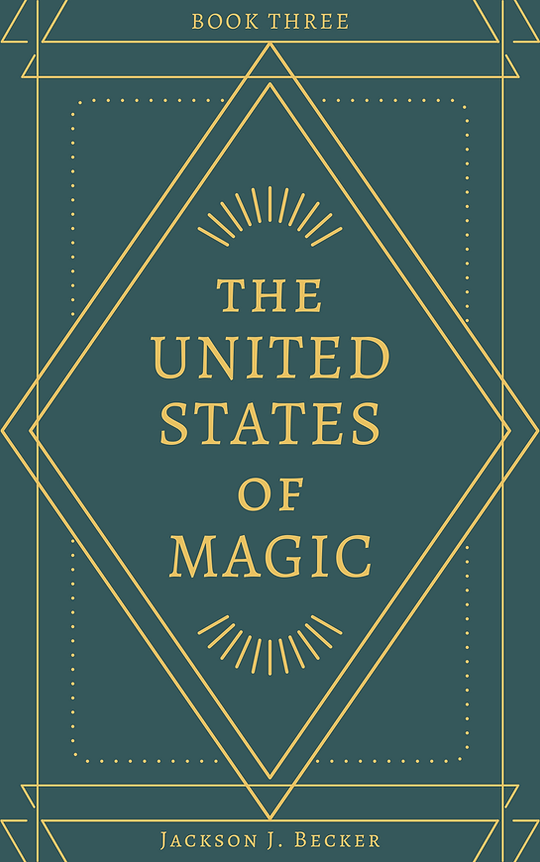

Published

Recycla-Bull Available Now
Children's Picture Book
When the animals on Farmer Jo's farm wake to find their home covered in litter, they call on RECYCLA-BULL to help clean it up. The heroic steer teaches the animals and young readers how to recycle right, reduce waste, and make sustainable choices to protect their natural resources.
This wonderful story introduces young readers to the world of recycling and encourages them to take good care of their planet.
Works In Progress
The books below are currently unpublished and unrepresented. Jackson is always happy to take on new beta readers or critique partners - reach out if interested.

Book 1
The United States of Magic - Book 1
Adult Fantasy · 108,000 words
It's 1860 in alternate America, and Lucien Lamonde has a score to settle. The young metallurgist blames one person for his mentor's death: his estranged father, Roland, the Silver King of Brazos.
Under a fake name, Lucien seeks the infamous dark magic Threshers to help destroy his father's growing empire, but instead he finds a houseful of kindhearted mages, including a pair of witch sisters and a runaway slave separated from his family.
Lucien's budding friendships provide him with a fresh perspective on his hitherto privileged life and vengeful priorities, but they are put to the test when eight southern states secede from the Union, with the Silver King poised to lead the traitorous forces. Only the Threshers can stop the Silver King now, but their help comes at a cost.
Lucien must decide between betraying his found family for a shot at revenge or setting aside his hatred to keep them alive.
The United States of Magic is perfect for readers who tend to fall head over heels with flawed characters and found families, and who get lost in maps and history books and endless Wikipedia pages, discovering how seemingly unimportant individuals can change the course of history.

Like Us
Star Stuff Like Us
Adult Science Fiction · 90,000 words
Following his four-year sentence, Castor wants to get far, far away—not only from Southam Prison, but from Mars in general. To pay for a flight off-planet, he's forced back into a life of crime by a local gangster, recently married to the only person Castor has ever loved.
Essie already regrets getting married. After being ghosted four years prior, she fell for the first person to make her feel valued again. But it was short-lived. Now all her husband cares about is thieving and breeding, and no longer makes any attempt at romance or asks to read her poems or for her help on jobs. And so, when her old winter fling waltzes back into her life, only to be set up by her manipulative husband, Essie leaves for good.
Castor and Essie embark on a desperate race across the red plains of Mars, fleeing the Law and scorned lovers alike, until they can at last pay for that trip off-planet together. But with a pair of burn-out stars in their hearts, they'll need to mend lasting wounds and rekindle that old flame before blasting off into the inky-black unknown for what could very well be the rest of their lives.
Like the infamous Bonnie and Clyde did so long ago, Castor and Essie are sure to capture the hearts of hopeless romantics and fans of doomed lovers. The near-future, low science fiction setting of Star Stuff Like Us provides an escape for anyone longing to get off-planet and explore the Solar System themselves.

Book 2
The United States of Magic - Book 2 Drafting
Adult Historical Fantasy
The Civil War storyline continues with the original cast fighting for freedom. The stakes grow higher as the magic of the world threatens to tip the balance of the war.

Book 3
The United States of Magic - Book 3 Outlining
Adult Historical Fantasy
The planned series finale. A new magical threat emerges that will require former enemies to reconcile - and everything the cast has fought for to be put on the line one final time.